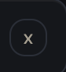
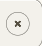
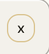
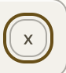

Toasts
Every rule that paints this component, in one file. Colour through a role, geometry straight from a primitive.
What it is
The product's transient message: something happened, it was not important enough to stop you, and it will go away. A line of text, a mark for the kind, a close, and a stack so that two of them do not fight for the same corner.
It stands on one screen and that screen is its own catalogue. No flow in this product currently raises a toast: the deposit confirms in its sheet, the bet confirms in the panel, an error takes a notice. So this component is a decision that has been drawn and not yet spent, and the honest reading of its one screen is not "we use toasts everywhere" but "we agreed what a toast would look like before the first flow needs one".
Anatomy
Which part is which, in the product's own words. Every class named here is one this file styles, and the build fails if it is not.
.toast-group- the stack. It exists so the second message has a defined place, which is the part a person only notices when it is missing..toast- one message: the quiet card, its mark and its text..toast-inner- the row inside it..toast-msg- the sentence. One sentence, because a toast that needs two is anotice..toast-close- the dismiss, and the only control in the component..toast-error- the error kind, which takes the outcome red on its mark and its edge and nowhere else.
Live
The component in the markup it ships with, quoted from the frozen kit, inside the product's own wrapper and painted by components/index.css alone. Each frame is a page of its own, so the width under the title is a real viewport and the media queries answer to it.
States, as they look
Photographs, not renderings. Each was taken in the specimen linked beside it with a REAL pointer, a real Tab and the mouse button really held down (ui-kit/_verify/states.cjs); nothing here is a state faked with a stand class, which is the rule this section used to be missing because of. One row per distinct FACE: two elements that measure the same at rest are one picture, however many screens carry them, and that grouping is computed rather than chosen. The pictures go stale the moment a rule changes, so each one records the files it was taken from and python3 ui-kit/_states.py fails when their bytes move.
The dismiss, at rest, hovered, held and focused. Quiet at rest so the message reads first; the ground answers the pointer and the mark does not move. It is the only interactive thing in the component, which is the point: a toast has one control and it is the way out.




When to use
The judgement a generator cannot read out of css, and the reason ui-kit/authored/toast.md exists.
When something succeeded and the person does not need to do anything about it, and only then. A toast is the weakest thing the product can say: it does not block, it does not persist, and a person who looks away misses it entirely.
Anything a person must act on, must read, or must be able to find again is a notice: it stays on the page, it can carry a control, and it does not disappear on a timer. Anything that must be answered before continuing is a dialog.
Because nothing raises one yet, the first flow that wants a toast is also the moment to check that a toast is the right answer. The question to ask is what happens to a person who blinks.
The rule, and the anti-rule
One sentence to follow and one mistake worth naming. An anti-rule has to name the component that should have been used instead, or it is a complaint rather than an address, and the build checks that it does.
One sentence, one kind, one dismiss, and it must be safe to miss: if losing the message costs a person anything, this is the wrong component.
Never use it for an error a person has to act on: an error with a next step is a notice, which stays on the screen and can carry the control, and a five-second message about money that has not arrived is a support ticket rather than a notification.
Seen: voice/docs/microcopy.md Step 15, where the toast copy was drafted alongside the 404, 500 and maintenance pages, and every error in the product's actual flows was written as a notice or a state screen instead. The split was made in the copy before it was made in the system.
Roles it reads
Colour comes in only through these. Change one on the token page and it changes here and on every screen at once.
--bevel-notice--bg-card-quiet--bg-control--bg-pressed--border-hairline--border-notice--edge-groove-light--line-brass-soft--shadow-ink--text-brass--text-muted--text-primaryClasses
Every class this file styles, and how many of the 105 painted screens carry it. A zero is not automatically dead: the last column says whether the class is built at runtime, shown only in the kit, a leftover of the grey wireframes, used by a course page, or genuinely used by nothing. Gate 30 fails the build on the last kind.
| class | screens | if zero |
|---|---|---|
| .app-case | 105 | |
| .ic-sm | 105 | |
| .toast | 1 | |
| .toast-close | 1 | |
| .toast-error | 1 | |
| .toast-group | 1 | |
| .toast-inner | 1 | |
| .toast-msg | 1 |
Where it stands
Written from
The authored half of this page is the one artefact here no gate can read: a sentence cannot be checked for being true. So it names its sources before it says anything, and the build fails when one of them does not exist. Read this first if you doubt a claim above it.
ui-kit/docs/inventory.mdL144 - "Toast (.toast: message + close, stacked)", filed L2, and its location column says toasts (spec page): the row itself records that this component has no home in the product.- The painted screens: exactly 1,
ui-visual/toasts.html, which is the catalogue of every toast rather than a screen a person reaches. voice/docs/microcopy.mdStep 15, where the toast copy was written with the other system nodes (404, 500, maintenance, cookie-consent) rather than with a flow.wireframes/_critique.mdL245, where those five system pages were found ABSENT and built, which is why the catalogue exists and the placements do not.ui-kit/docs/backlog.mdS11's neighbourhood:.tc-page, the page a toast is demonstrated on, was declared incomponents/toast.cssand had to move tocomponents/base.css, because the catalogue is not part of the component.
What the file says
The selectors and the css, for a person about to edit them. To change this component, edit components/toast.css; to change a value it reads, edit the role in components/tokens.css.
Every state rule, and what it moves
| selector | what moves |
|---|---|
| .app-case .toast-close:hover | border-color:var(--line-brass-soft);color:var(--text-primary) |
| .app-case .toast-close:active | background:var(--bg-pressed) |
The tokens these states read, on both grounds
Neither panel is a screenshot. Each carries data-theme itself, so the token resolves inside it and a role that was given a value in only one theme shows up here as a control that does not move.
--line-brass-softConfirm betthe edge this state draws--text-primaryConfirm betthe label, on the ground this state puts it on--bg-pressedConfirm betthe ground the control settles onto--line-brass-softConfirm betthe edge this state draws--text-primaryConfirm betthe label, on the ground this state puts it on--bg-pressedConfirm betthe ground the control settles ontocomponents/toast.css
/* components/toast.css
Component: toast. Classes: .toast, .toast-close, .toast-error, .toast-group, .toast-inner, .toast-msg.
Reads: --bevel-notice, --bg-card-quiet, --bg-control, --bg-pressed, --border-hairline, --border-notice, --edge-groove-light, --line-brass-soft, --shadow-ink, --text-brass, --text-muted, --text-primary
Stand: ui-kit/toast.html
Stands on: 1 ui-visual screens (toasts.html)
Colour goes through a role, geometry straight from a primitive. No em dash. */
/* .tc-page was here and is in base.css. It is not a toast: it is the section
of the toast catalogue that stands in for the page underneath, one screen,
one margin, and having it here is why the toast read as containing the
cookie banner. Backlog item 16c. */
.app-case .toast-inner{display:flex;flex-direction:column;gap:var(--space-12)}
.app-case .toast-group{display:flex;flex-direction:column;gap:var(--space-8)}
.app-case .toast{display:flex;align-items:center;gap:var(--space-12);border:1px solid var(--border-hairline);border-radius:var(--radius-10);background:var(--bg-card-quiet);padding:var(--space-12) var(--space-12);box-shadow:0 18px 40px -24px var(--shadow-ink),inset 0 1px 0 var(--edge-groove-light)}
.app-case .toast .ic-sm{width:var(--icon-18);height:var(--icon-18);flex:0 0 var(--icon-18);stroke:var(--text-brass);fill:none;stroke-width:2.2;stroke-linecap:round;stroke-linejoin:round}
.app-case .toast-msg{flex:1;color:var(--text-primary);font-size:var(--text-14);font-weight:var(--weight-medium)}
.app-case .toast-close{flex:0 0 auto;width:var(--size-24);height:var(--size-24);border:1px solid var(--border-hairline);border-radius:var(--radius-10);background:transparent;color:var(--text-muted);font-size:var(--text-12);cursor:pointer;line-height:var(--leading-none);transition:border-color var(--dur-quick) ease,background var(--dur-quick) ease,color var(--dur-quick) ease}
.app-case .toast-close:hover{border-color:var(--line-brass-soft);color:var(--text-primary)}
/* Dismiss is an icon button on a transparent ground, so it presses the way every quiet control
in the system presses and has no private idea of its own. It stays --bg-pressed on the error
toast too: a toast here carries no green or red by decision, and a close button that reddened
under the thumb would put the feedback colour on the one part of the toast that is not the
feedback. Equal specificity to the hover above (0,3,0 both), so source order decides and this
has to stay after it. The toast is lifted, the button inside it is not, so there is no outer
shadow to drop. Nothing disables it: a toast you cannot dismiss is not a state this product
has, so there is no disabled skin and no guard pretending there is one. */
.app-case .toast-close:active{background:var(--bg-pressed)}
.app-case .toast.toast-error{border-color:var(--border-notice);background:var(--bg-control);box-shadow:0 22px 46px -22px var(--shadow-ink),inset 0 1px 0 var(--bevel-notice)}
.app-case .toast.toast-error .ic-sm{width:var(--icon-22);height:var(--icon-22);flex:0 0 var(--icon-22);stroke:var(--text-primary);stroke-width:2.4}
.app-case .toast.toast-error .toast-msg{color:var(--text-primary);font-weight:var(--weight-semibold)}